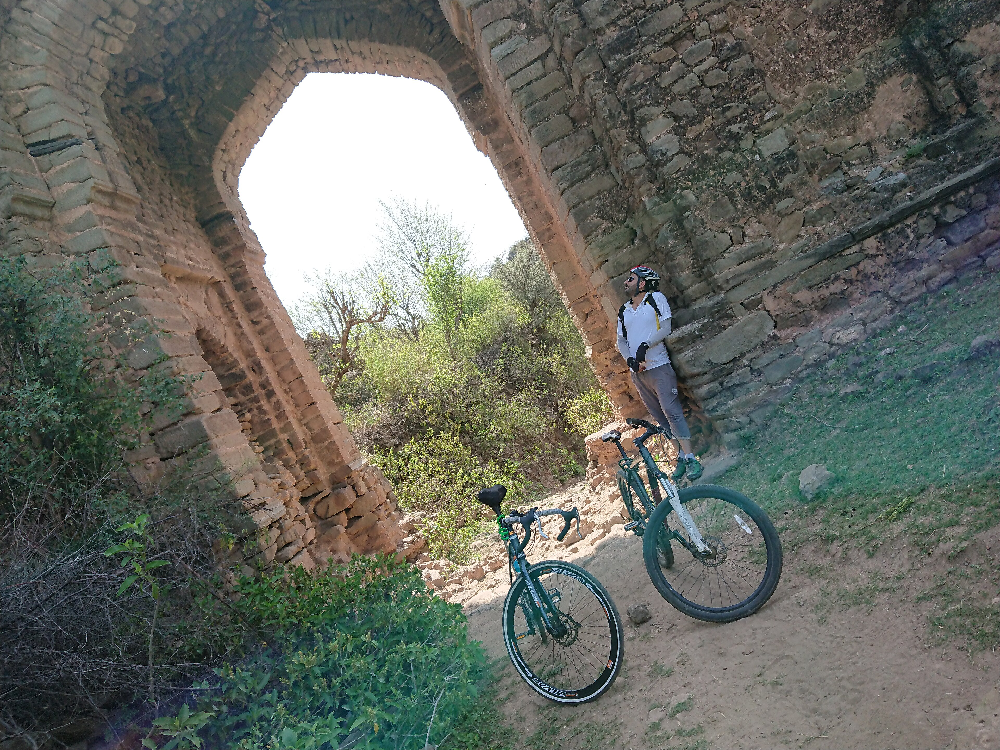
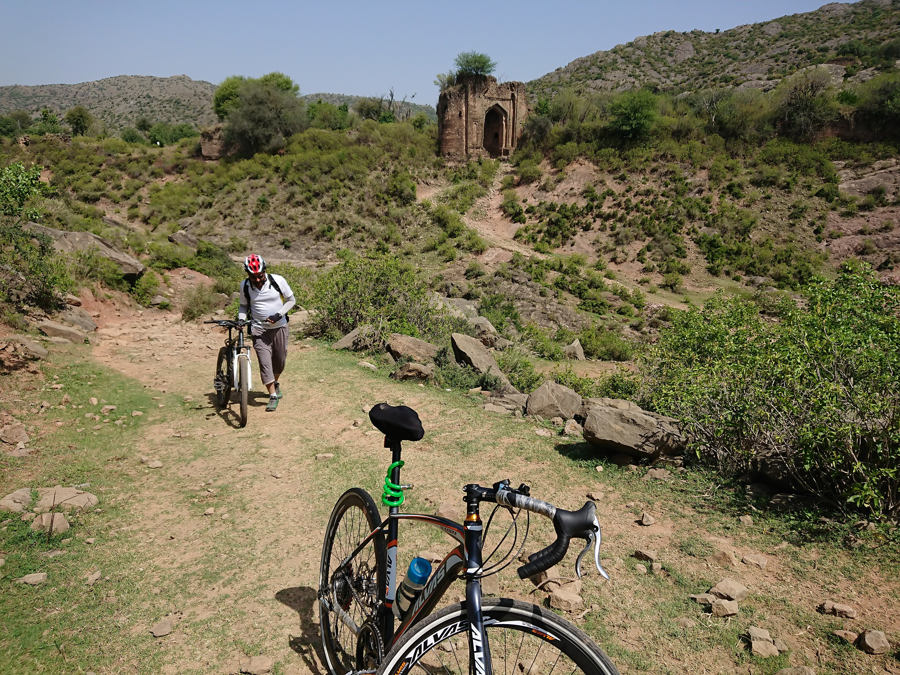
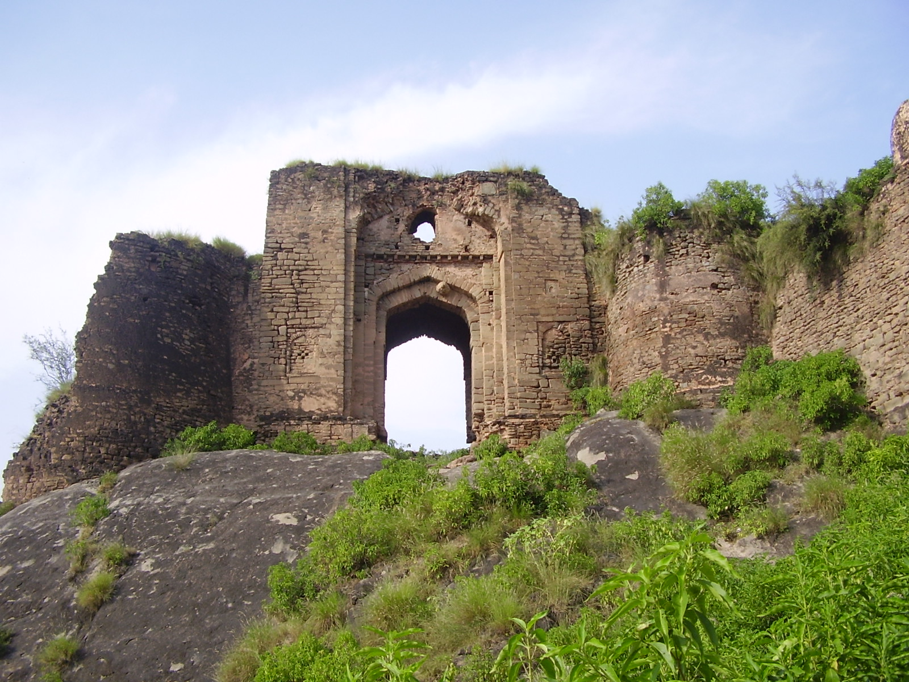
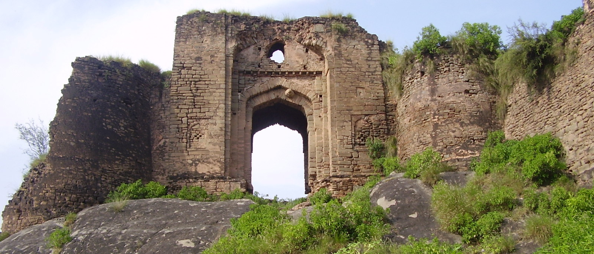
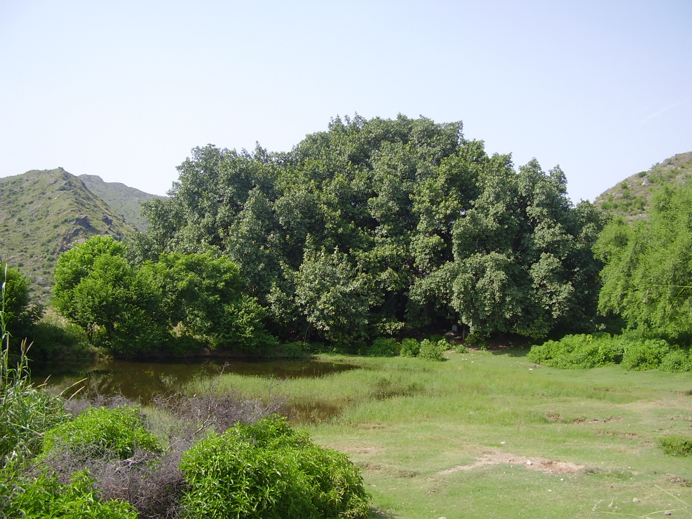
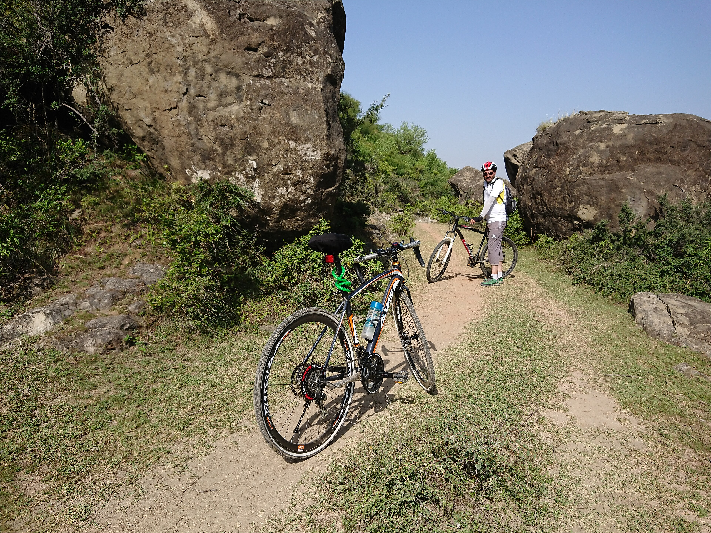
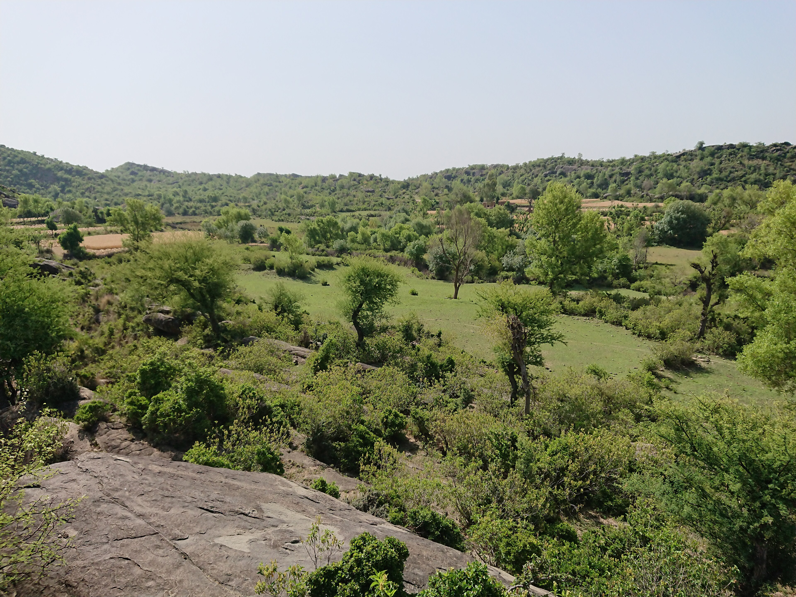

📍 Location: Lehtrar
Road, Islamabad Capital Territory / Rawalpindi District border area, Punjab,
Pakistan
📅 Period: 15th–16th
century A.D. (Gakhar period); possible earlier foundations
🏷️ Category: Military
/ Historical / Architectural
⚠️ Status: Provincial
Heritage Site; recognized under Punjab Antiquities Act
🔢 Classification: Protected
Antiquity
📏 Significance: Military,
Clan, Dynastic, Strategic
🗺️ Coordinates: 33°38′N
73°18′E

The Fort at the Edge
Northeast of Islamabad, beyond the orderly geometry of the
capital's planned sectors and the green crest of the Margalla Hills, the
terrain drops into a rougher country — a landscape of deep ravines, seasonal
torrents, and steep, forested slopes that mark the transition from the Potohar
Plateau to the mountains of Kashmir. It is a landscape that has always been
contested. The valleys offer routes of passage. The ridges offer positions of
defence. And upon one such ridge, overlooking the Soan River at a point where
the water has cut a narrow defile through the rock, stands a fortress that
embodies the turbulent history of the clans that ruled this borderland for
centuries.

Pharwala Fort. The stronghold of the Gakhars.
The Gakhars — also spelled Ghakkar or Gakhar — were a Rajput
warrior clan whose domains encompassed the broken hill country between the
Jhelum and Indus rivers, extending northward into the fringes of Kashmir. They
were not empire-builders. They were, rather, the kind of local power — fiercely
independent, militarily formidable, deeply rooted in the landscape — that every
empire, from the Ghaznavids to the British, was obliged to accommodate, co-opt,
or suppress.

Pharwala was their principal seat. From this fort, they
exercised authority over the surrounding country, collected revenue from the
settled populations of the valleys, and defended their territory against rivals
both local and imperial.

The history of the Gakhar clan is long, violent, and
imperfectly documented. They appear in the chronicles of the Muslim historians
of the Delhi Sultanate as a powerful and troublesome people, controlling the
hill tracts that lay between the Sultanate's heartland in the Gangetic plain
and the frontier provinces of the northwest. Their relations with successive
Delhi sultans oscillated between submission and rebellion, alliance and
warfare.

By the fifteenth century, the Gakhars had established
themselves as the dominant power in the Potohar region, and Pharwala had become
their principal fortified base. The fort that survives today dates, in its
present form, primarily from this period, though it is possible — indeed likely
— that the site was fortified in some manner before the Gakhars made it their
capital.
The clan's most consequential moment in the larger narrative
of subcontinental history came with the arrival of the Mughals. The Gakhar
chief Hati Khan allied himself with the first Mughal emperor, Babur, during the
latter's invasion of India in the 1520s. This alliance proved durable. The
Gakhars became, in effect, Mughal vassals — retaining their local autonomy in
exchange for military service and loyalty to the imperial throne.
But the relationship was not without friction. The Gakhar
chief Sultan Sarang Khan later came into conflict with Sher Shah Suri, the
Afghan ruler who temporarily displaced the Mughals. Sher Shah besieged and
captured Pharwala Fort, and Sultan Sarang Khan was killed in the fighting. The
fort subsequently passed through various hands before being restored to the
Gakhars under renewed Mughal authority.
The clan's power waned in the eighteenth and nineteenth
centuries, as the Mughal Empire dissolved and new powers — the Sikhs, the
British — imposed their own order upon the region. But Pharwala Fort survived,
a monument to the centuries during which the Gakhars held the hills.
Pharwala Fort is a substantial fortification, though far
smaller than the great imperial fortresses of Rohtas or Lahore. Its design
reflects the particular military requirements of hill warfare — the need to
command a narrow defile, to exploit the natural defences of the terrain, and to
withstand siege by forces that might outnumber the garrison significantly.

The fort occupies a ridge above the Soan River, with steep
drops on two sides that make approach difficult. The main entrance is through a
gatehouse of considerable strength — a passage flanked by two large, round
bastions, above which defenders could direct fire upon anyone attempting to
force entry. The gate passage itself is angled, compelling attackers to turn
under fire — a standard feature of Indo-Islamic military architecture.
The curtain walls, constructed of rough-dressed stone with
lime mortar, follow the contour of the ridge. Bastions project at intervals,
providing flanking fire. Within the enclosure, the remains of residential
structures, storage facilities, and a mosque are visible, though most are in
advanced states of decay.
The most striking feature of the fort is its gatehouse,
which retains much of its original height and structural integrity. The round
towers flanking the entrance are solidly built and imposing. They represent the
architectural signature of Pharwala — the element that gives the fort its
distinctive character and that appears in virtually every photograph of the
site.
The Siege of Pharwala
The siege and capture of Pharwala Fort by Sher Shah Suri in
the 1540s is the single most dramatic episode in the fort's history. The event
is recorded by the court historians of the Sur dynasty and has been retold in
numerous subsequent accounts.
Sher Shah, having defeated the Mughals and established his
authority over northern India, found the Gakhar chief Sultan Sarang Khan to be
a persistent irritant — a local ruler who continued to profess loyalty to the
exiled Mughal dynasty and who controlled a strategically important stretch of
territory on the road to Kabul. Sher Shah resolved to crush him.
The campaign was not easy. The hill country favoured the
defender. The Gakhars were experienced fighters in their own terrain. But Sher
Shah brought overwhelming force to bear, and after a siege of uncertain
duration, Pharwala fell. Sultan Sarang Khan was killed — in battle, according
to some accounts; by treachery, according to others. The fort was occupied by
Sur forces.
The fall of Pharwala was a minor episode in the larger history of Sher Shah's empire. But for the Gakhars, it was a catastrophe — a blow from which the clan's prestige never fully recovered. The fort was eventually returned to the Gakhars when Mughal authority was re-established, but the power dynamics had shifted. The Gakhars were thereafter loyal subordinates, not independent actors.
Present Condition and Prospects
Pharwala Fort stands today in a condition of partial ruin.
The gatehouse remains substantially intact. Sections of the curtain wall
survive to their original height. But much of the interior has collapsed or
been reduced to foundations. Vegetation covers large areas of the site. No
systematic archaeological excavation has been conducted. Conservation efforts
have been limited to occasional interventions by provincial heritage
authorities.
The fort's proximity to Islamabad — it lies within roughly
forty kilometres of the federal capital — gives it a potential advantage that
few other heritage sites in the region possess. It is accessible by road. It is
close to a major population centre. And it occupies a site of considerable
natural beauty, overlooking the Soan gorge in a landscape of hills and forest.
These factors suggest that Pharwala could, with appropriate
investment and management, become a heritage site of significant visitor
interest. But the investment has not been forthcoming, and the management
framework necessary for such a development does not yet exist.
The fort awaits its future. Whether that future involves
restoration and public interpretation, or continued decay and eventual loss, is
a matter that remains to be decided.
Pharwala Fort occupies a
dramatic position above the Soan River gorge, and its location tells you
everything you need to know about the Gakhars who built it. These were a people
who understood terrain, who used landscape as both shield and statement. The
fort's placement — commanding the river approach while remaining naturally
protected on multiple sides — is a masterclass in medieval military geography.
The Gakhars were among the most
tenacious local ruling clans of the Pothohar Plateau, and their relationship
with successive imperial powers — whether the Delhi Sultanate, Sher Shah Suri,
or the Mughals — was always a complex dance of submission, rebellion, and
alliance. Pharwala Fort was the physical expression of their identity and
resistance across those turbulent centuries.
Today, the fort sits in relative
obscurity despite being barely an hour's drive from Pakistan's capital. That
proximity to Islamabad makes it an obvious candidate for better heritage
management and promotion. As more Pakistanis take interest in their own
historical landscape, places like Pharwala Fort stand ready to reward that
curiosity with history that is rich, layered, and entirely their own.
Q1: Who built Pharwala Fort?
Pharwala Fort is attributed to the Gakhar clan, a powerful
local ruling family who controlled much of the Pothohar Plateau during the
medieval period. It was likely built and expanded between the 10th and 16th
centuries.
Q2: Where is Pharwala Fort
located?
The fort is situated above the Soan River gorge,
approximately 40–50 kilometres from Islamabad, in the Punjab province of
Pakistan. It is accessible via Kahuta or surrounding rural roads.
Q3: What is the historical
significance of the Gakhars?
The Gakhars were a prominent tribal clan who maintained
control over the Pothohar region for several centuries, playing significant
roles in the political dynamics between the Mughal Empire, the Delhi Sultanate,
and Sher Shah Suri.
Q4: Is Pharwala Fort safe and
accessible to visit?
The fort can be visited, but the site is not formally
developed for tourism. The approach involves rough terrain, and the structures
have not been restored. Visitors should exercise caution around unstable
sections of the walls and towers.
|
Detail |
Information |
|
Nearest City |
Islamabad (~40 km) |
|
Access |
Via Lehtrar Road from Islamabad; the final approach
involves a rough track and a short walk |
|
Best Season |
October to April |
|
Current Status |
Accessible but no visitor facilities; no entry fee |
|
Site Museum |
None |
|
Advisory |
The site involves walking on uneven terrain. Carry water.
Inform local villagers of your visit. Best visited with a local guide. |
📊 Summary Table of
Historical Facts
|
Fact |
Detail |
|
Site Name |
Pharwala Fort |
|
Location |
Near Lehtrar, Rawalpindi District / Islamabad Capital
Territory border |
|
Ruling Clan |
Gakhars (Rajput) |
|
Primary Period |
15th–16th century A.D. |
|
Key Event |
Siege and capture by Sher Shah Suri (~1540s) |
|
Construction Material |
Rough-dressed stone with lime mortar |
|
Key Feature |
Double-towered gatehouse |
|
Defensive Position |
Ridge above Soan River gorge |
|
Current Condition |
Partial ruin; gatehouse substantially intact |
|
Archaeological Excavation |
None conducted |
|
Heritage Protection |
Provincial Protected Antiquity |
Pharwala Fort the historic stronghold of
the Gakhar clan, besieged by Sher Shah Suri in the 16th century. Explore the
military architecture, clan history, and conservation challenges of this
strategically positioned fortress above the Soan River gorge in northern
Punjab.

This encyclopedia is free for everyone. If it brought value to you, please consider supporting the research behind it.
☕ One-Time Support 🎯 Monthly SupportWhile exploring Pharwala Fort, Pakistan — The Hindu Shahi Stronghold of the Pothohar, you may also enjoy reading Lahore Fort, Pakistan — The Citadel of the Mughal Empire | UNESCO World Heritage, which expands the historical narrative and connects related civilizations and archaeological discoveries.